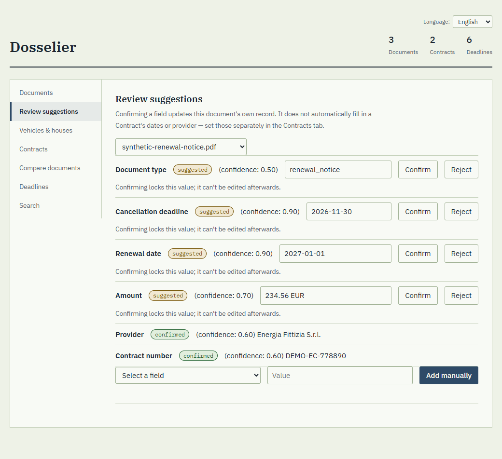
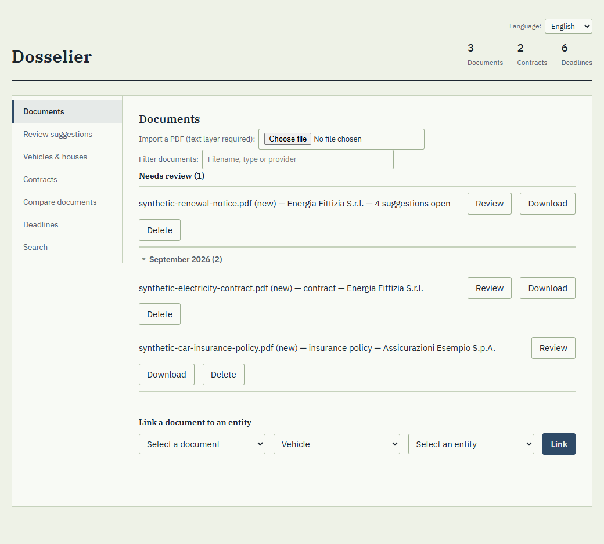
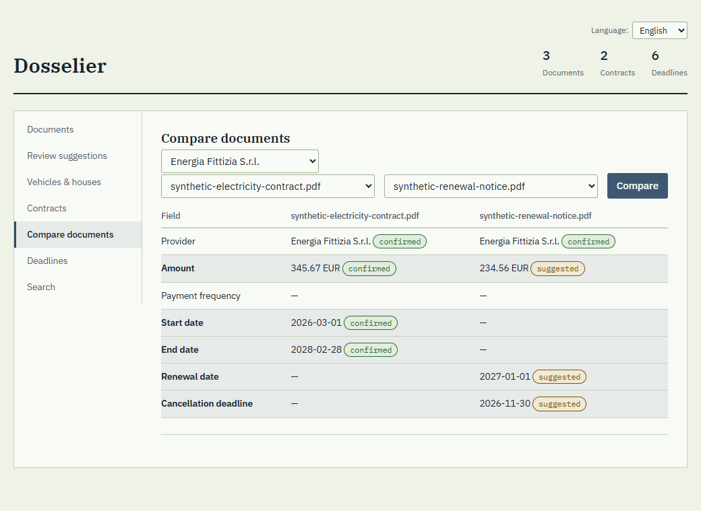
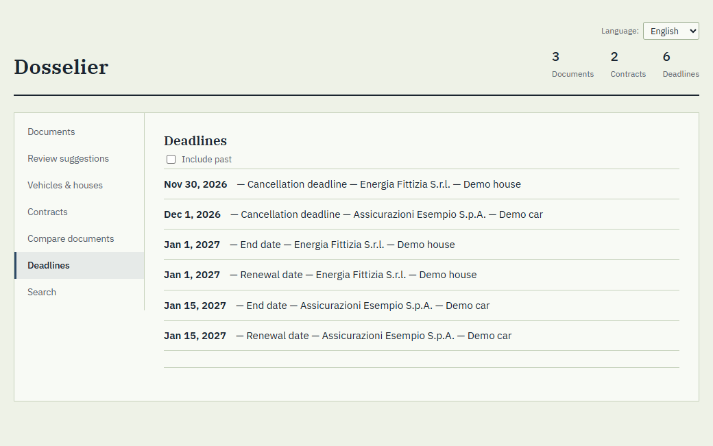

Which contracts do I even have?
Insurance, energy, telephone, the car… each with its own provider, its own dates and its own PDF somewhere. The answer lives in your memory, until it does not.
Not a company. A garage for ideas ready to step outside.
Dosselier
Dosselier turns the PDFs of everyday life — contracts, insurance, utilities, vehicle papers — into a clear picture of what you have, with whom, and when something expires. It runs on your own computer, and it never decides for you.

Local-firstEverything stays on your computer: no account, no cloud, no upload.
You confirmEvery value the tool finds is a suggestion until you confirm it. Nothing is guessed silently.
AI is optionalFully usable without any AI. An AI provider is opt-in, for scanned pages and other languages.
01 / The Problem
Household administration fragments across folders, PDFs, emails and portals. Dosselier is not a document vault: documents attach to real things — a vehicle, a house, a contract — so the picture stays understandable and actionable.
Insurance, energy, telephone, the car… each with its own provider, its own dates and its own PDF somewhere. The answer lives in your memory, until it does not.
A contract renews itself because the date passed unnoticed in a folder.
The last day to cancel is written in a paragraph nobody rereads.
What changed between last year's document and this year's?
Folders group files, not the things they are about.
Policy numbers, addresses, amounts: not for a stranger's server.
It suggests. You decide.
Every extracted value keeps its source and its status — suggested, confirmed or rejected. Only confirmed values drive deadlines and comparisons, and a confirmed value is never silently overwritten.
02 / How It Works
import
A PDF with a text layer goes in. The same content is recognised and never duplicated.
extract
Plain, explainable rules suggest the document type, dates, provider, amount and contract number.
review
Confirm, edit or reject each suggestion. Only what you confirm becomes authoritative.
connect
Link documents to a vehicle, a house or a contract — one document can belong to several.
follow
A deadlines view, structured search, and a side-by-side comparison of two documents of the same contract.
03 / What It Looks Like
Screens from the running app, with the three fictional sample documents that ship with the project. No real data appears anywhere on this page.



04 / Built To Be Trusted
deterministic
The core follows plain rules you can read. No model is needed for it to work, and nothing depends on a remote service.
provenance
Each field remembers where it came from and whether a person confirmed it, so a heuristic is never presented as a fact.
private
It listens on your own computer only and keeps documents and data locally. The one optional exception is an AI provider you switch on yourself.
five languages
The interface is available in Italian, English, French, German and Spanish, and follows your browser.
second opinion
Every change is checked by an independent model before it is kept — and it keeps finding real bugs.
case study
Dosselier is built with, and is a working example of, the Workflow Management Skill: sessions, tasks and decisions kept as plain files.
05 / Where It Stands
Version 0.1 covers the whole path from import to comparison. It is a personal, single-user project, built in the open as a portfolio piece.
v0.1
Import, review, vehicles, houses and contracts, deadlines, search and structured comparison.
Done
languages
Interface in five languages, with the language remembered.
Done
help
Contextual help on fields and a short user guide.
Next
history
Full document version history and a textual comparison of two PDFs.
Later
reminders
Deadline notifications and calendar export.
Later